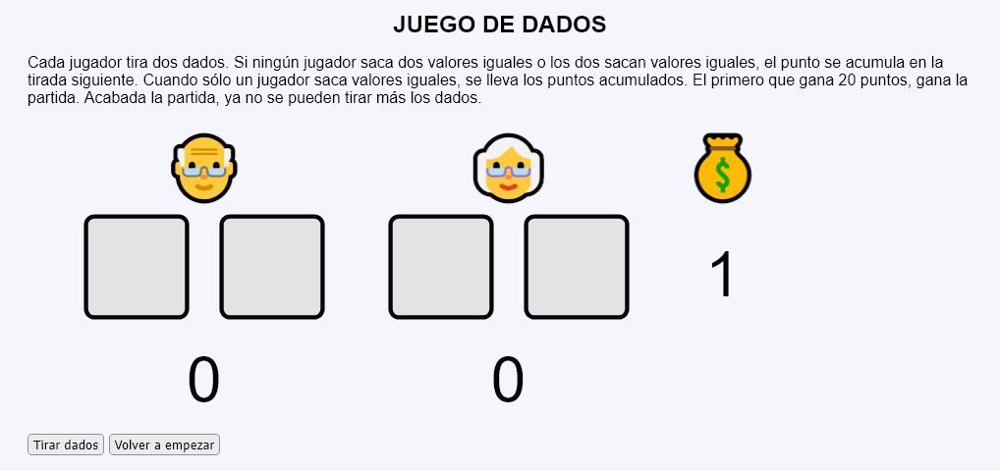
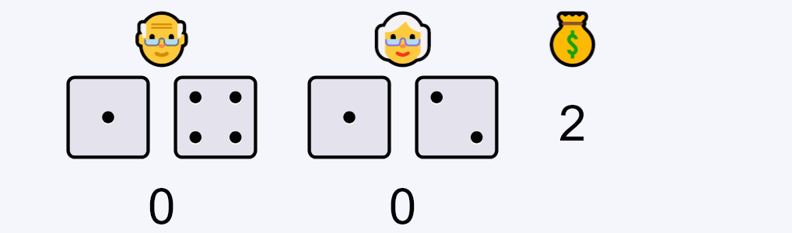
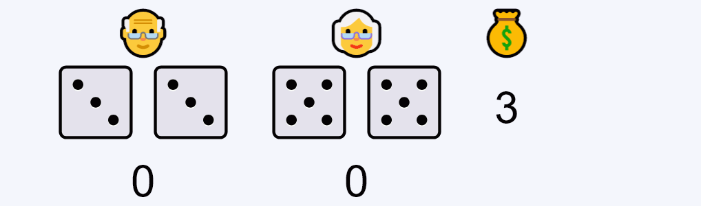
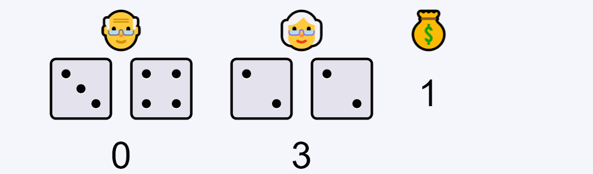
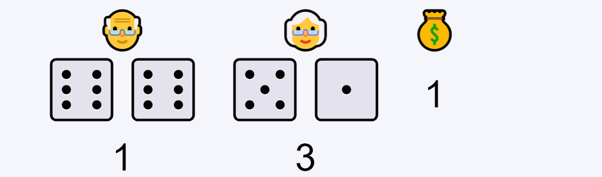
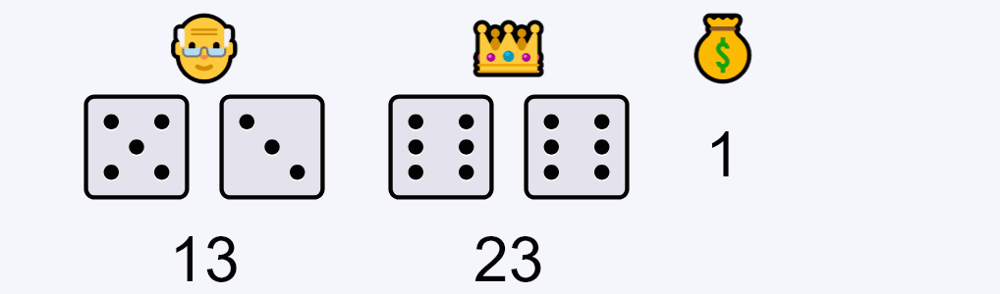

Juego de dados - Ejemplo de programa
Nota: El día del examen los alumnos no tienen acceso a este ejemplo, solamente tienen acceso a las capturas del apartado anterior.
Un ejemplo de programa puede probarse en la ventana siguiente:
En este ejercicio se debe crear un programa que simule una partida de un juego de dados en el que cada jugador tira dos dados. Si ningún jugador saca dos valores iguales o los dos sacan valores iguales, el punto se acumula en la tirada siguiente. Cuando sólo un jugador saca valores iguales, se lleva los puntos acumulados. El primero que gana 20 puntos, gana la partida. Acabada la partida, ya no se pueden tirar más los dados.






<table style="font-size: 4rem; text-align: center; border-spacing: 50px 0;">
<tr>
<td>👴</td>
<td>👑</td>
<td>💰</td>
</tr>
<tr>
<td>
<img src="img/dados/5.svg" alt="5" width="120" height="120">
<img src="img/dados/3.svg" alt="3" width="120" height="120">
</td>
<td>
<img src="img/dados/6.svg" alt="6" width="120" height="120">
<img src="img/dados/6.svg" alt="6" width="120" height="120">
</td>
<td>1</td>
</tr>
<tr>
<td>13</td>
<td>23</td>
<td></td>
</tr>
</table>
Nota: El día del examen los alumnos no tienen acceso a este ejemplo, solamente tienen acceso a las capturas del apartado anterior.
Un ejemplo de programa puede probarse en la ventana siguiente: